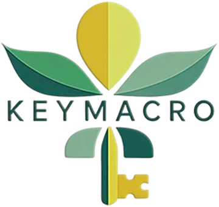
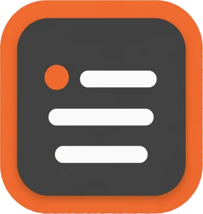
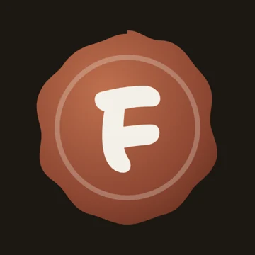

Built out of necessity.
I always wanted to build apps. I just never had the time.
I tinkered with projects for years. In 2024 I told myself it was now or never, saved up some money and bought my time. Thirty-five years of kitchens taught me discipline and organization, and that's exactly how I build.
-

KeyMacro
My kitchen brain in an app.
My favorite part is Meal Prep Kitchen. It takes the plan you created, breaks it down in order of what takes longest, and splits it into stations: hot, cold, prep. Just like running a line.
- 7 monthsconcept to first sale
- Stationshot, cold and prep
-

SlidePress
Three apps and hours, down to ten minutes.
I was making social posts for KeyMacro and bouncing between three apps for every one. A post could take hours. Now I make it and publish it to every account in about ten minutes. It has so many moving parts and reviews to get through, and it still went to production in two months. It's the build I'm proudest of so far.
- 2 monthsto production
- 10 minper post, everywhere
-

FunkHarp
A site for a friend who lives both lives too.
Built for a buddy of mine in St. Augustine who is also a chef, and a great musician.
funkharp.com → -
reytek1201.com
Music, art, projects and play, under one name.
A light-trail vortex, a turntable you can scratch, and four decades on four lanes. Seeing how it's coming along, it might give the others some competition.
Also in the works: POE Source, a Path of Exile 2 companion, on the Gaming page.